Applications of machine learning for creative and assistive audio plugins
October 10th, 2019 - Dolby Laboratories - Barcelona, Spain
Christian Steinmetz
Music Technology Group at Universitat Pompeu Fabra
Christian Steinmetz
christianjames.steinmetz01@estudiant.upf.edu
www.christiansteinmetz.com
@csteinmetz1
Universitat Pompeu Fabra
MSc in Sound and Music Computing
Clemson University
BSc in Electrical Engineering
BA in Audio Technology
Internships
Bose Corporation
Cirrus Logic, Inc.
Vetronix Research Corp.
creative and assistive audio plugins
creative
expand options available to musicians and engineers
Soundtoys suite
( DSP )
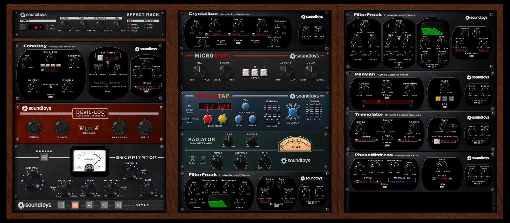Goodhertz Vulf Compressor
( DSP )
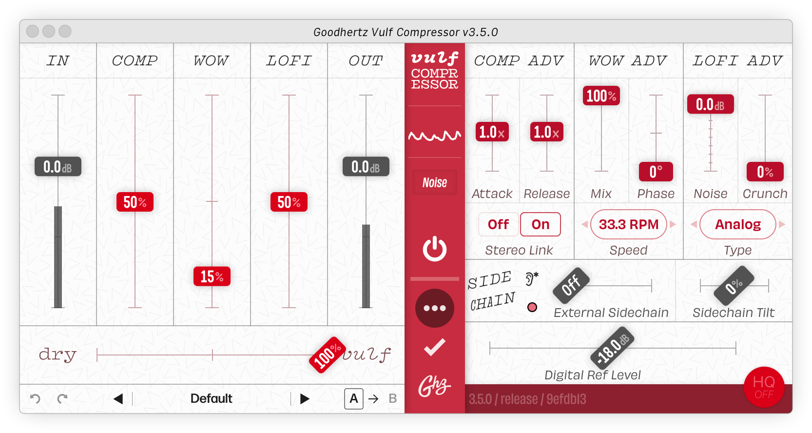Brainworx bx_panEQ
( DSP )
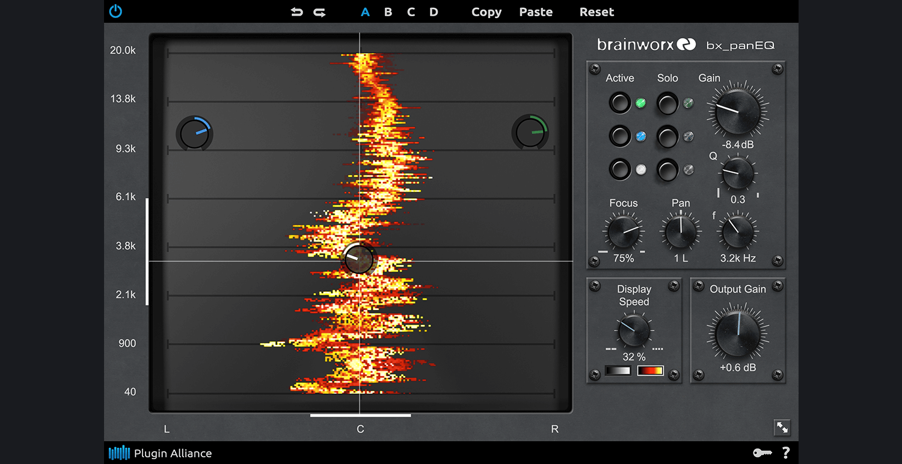assistive
lower friction in achieving desired result
iZotope Ozone
( DSP + ML )
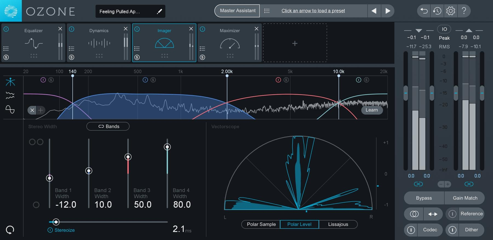LANDR Mastering
( DSP + ML )
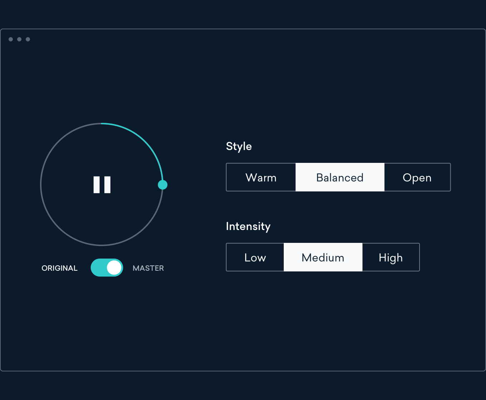accusonus ERA4
( DSP + ML )
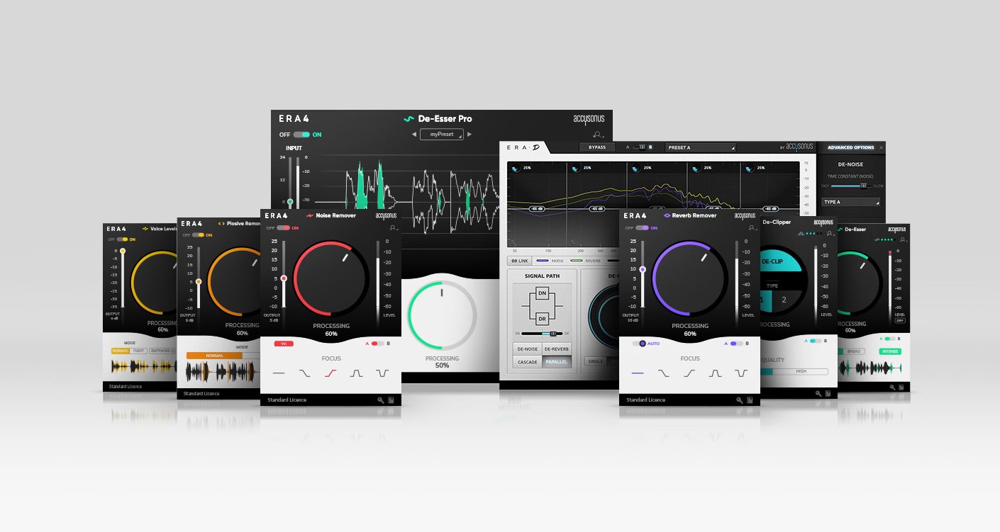Relevant
but not music production
Magenta Studio
( ML )
Popgun Labs Splash PRO
( ML )
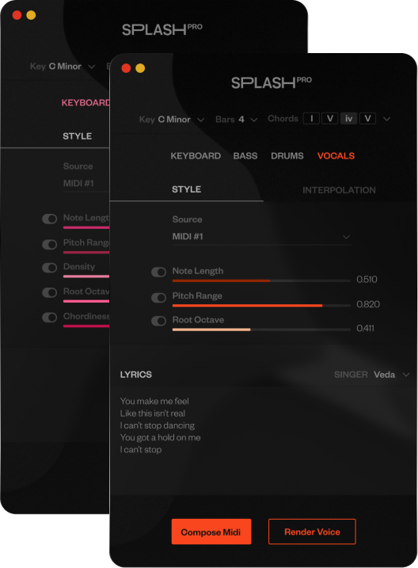My work
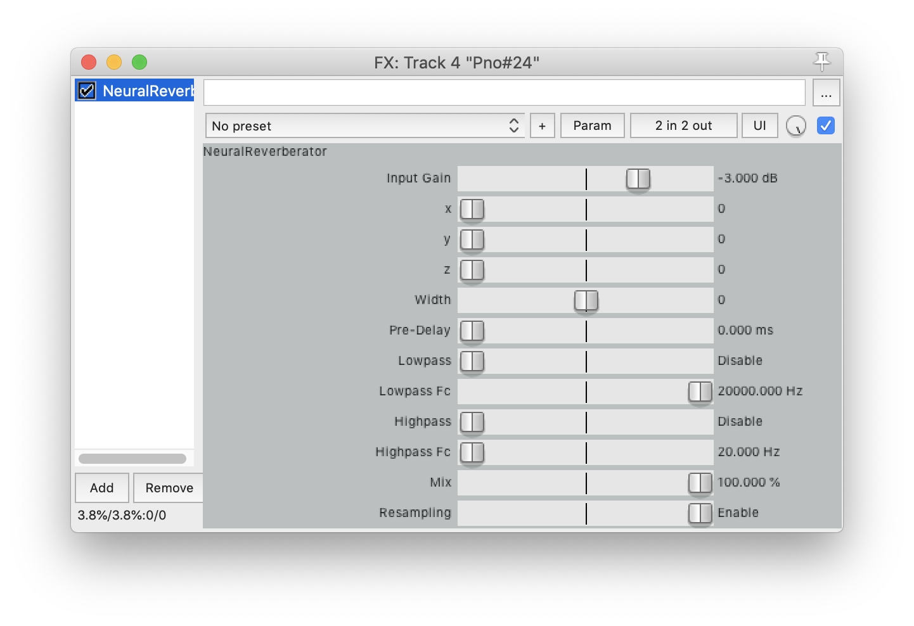
NeuralReverberator
Reverb synthesis with a spectral autoencoder
( creative )
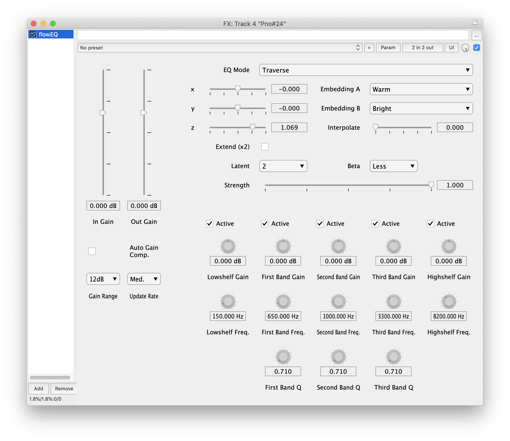
flowEQ
Smarter equalizer with β-VAE
( assistive)
NeuralReverberator
Convolutional reverb
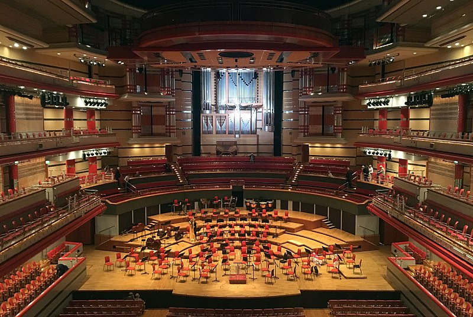Algorithmic reverb
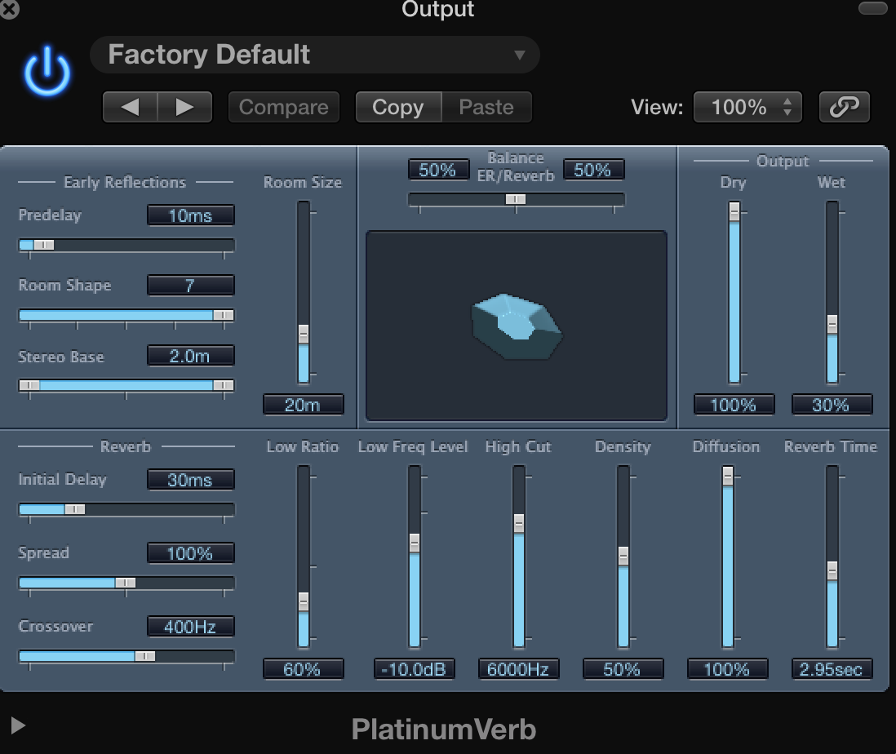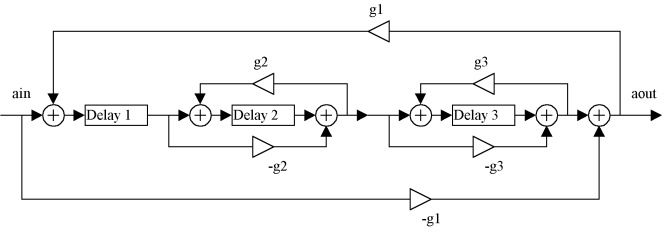
Nested allpass filters
Spectral autoencoder
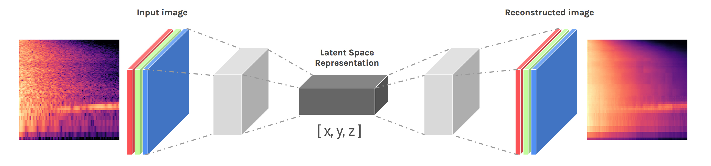We create a parameterized convolutional reverb synthesizer
(User samples from the 3 dimensional latent space)
How does it sound?
Dry
Short reverb
Long dark reverb
(Strange delay)
Data
~2,000 impulse responses
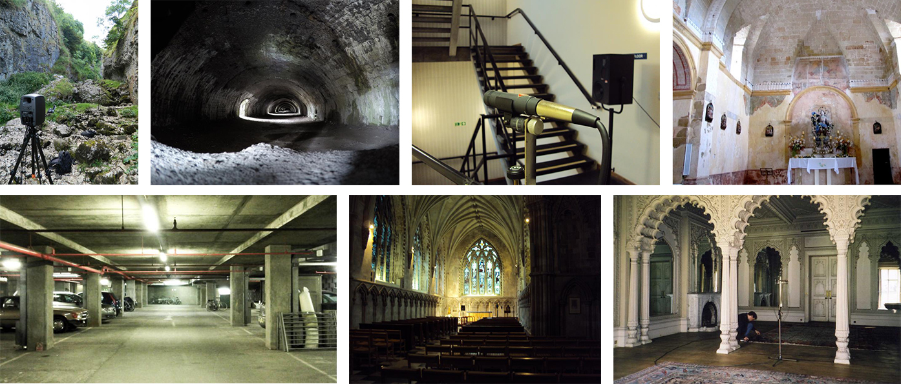Open AIR Library, Greg Hopkins, C4DM, and others
Truncated to 2 seconds in length
Downsampled to 16 kHz
Latent Space

Implementation details
- Vanilla CNN autoencoder based on NSynth baseline
- Use Griffin-Lim for phase reconstruction
- Model is trained on mono IRs, but we use a trick for stereo
- MATLAB Audio Toolbox for implementing VST plugin
- For real-time operation on CPU we subspace the latent space output
flowEQ
Digital parametric equalizer plugin
Gain |
|
Frequency |
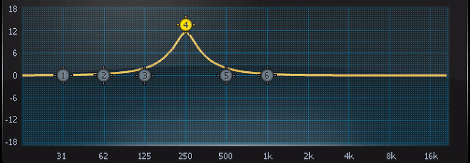 |
Q (bandwidth) |
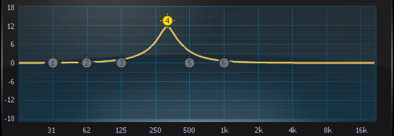 |
Dataset
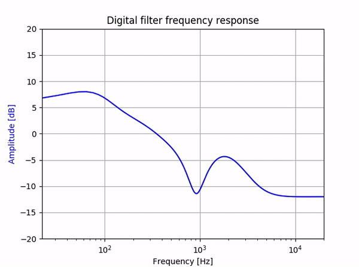SAFE: A system for the extraction and retrieval of semantic audio descriptors
Ryan Stables, Sean Enderby. Brecht De Man, Gyorgy Fazekas, and Joshua Reiss, 2014.
~1700 examples
Disentangled variational autoencoder
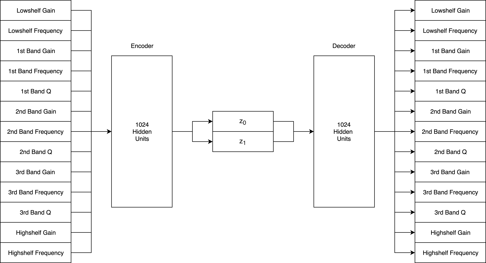
How does it sound?
Disentanglement
Loss function
$$ \Large \mathcal{L}_{\beta-VAE}(\pmb{\theta},\pmb{\phi},\mathbf{x}^{(i)}) = - \mathbb{E}_{\mathbf{z} \sim q_{\theta}(\mathbf{z}|\mathbf{x}^{(i)})} [ {\log{p_\phi(\mathbf{x}^{(i)} | \mathbf{z})}} ] + \mathbf{\beta} \: D_{KL} (q_\theta(\mathbf{z} | \mathbf{x}^{(i)}) || p_\theta(\mathbf{z})) $$The beta term weighs the KL loss against the reconstruction loss
Larger beta means greater disentanglement
β-VAE: Learning Basic Visual Concepts with a Constrained Variational Framework
Irina Higgins, Loic Matthey, Arka Pal, Christopher Burgess, Xavier Glorot, Matthew Botvinick, Shakir Mohamed, and Alexander Lerchner, 2017.
Latent space
β = 0.000
Latent space
β = 0.001
Latent space
β = 0.010
Latent space
β = 0.020
Implementation details
- Train 12 different models with varying latent dim and β
- Train all models for 200 epochs (about 2 hours on CPU)
- MATLAB Audio Toolbox for implementing VST plugin
- Network is implemented in pure MATLAB code and inference runs in real-time
- User can select among these samples to adjust latent representation